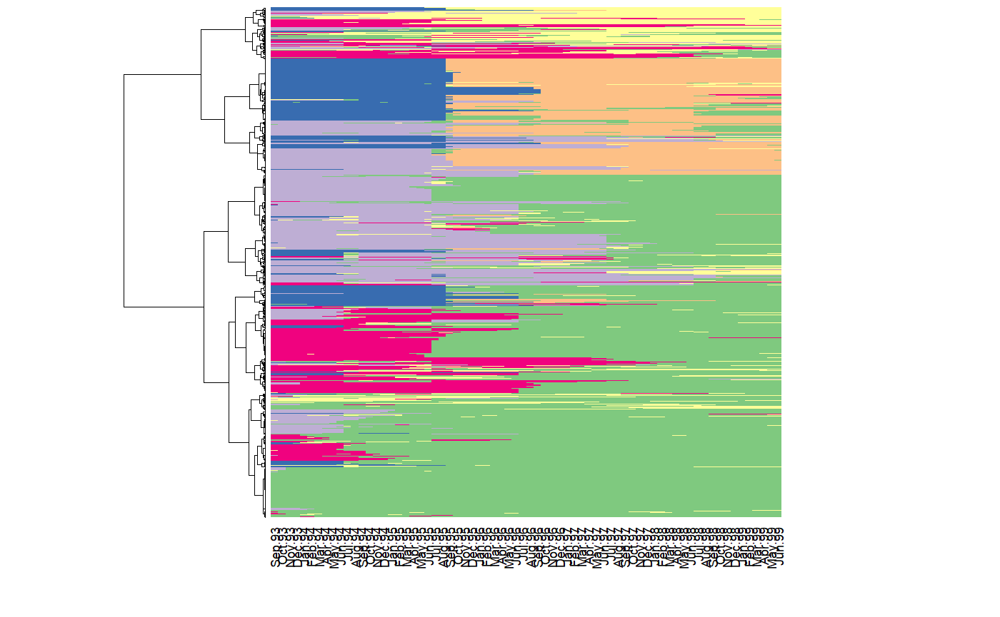
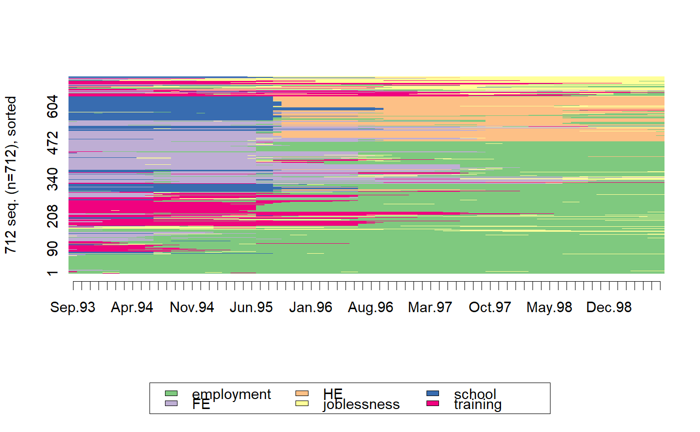

Index plot of state sequences. Sequences are ordered accoring to the specified dendrogram. The dendrogram is also plotted on the side of the index plot.
seq_heatmap(seq, tree, with.missing = FALSE, ...)
| seq | a state sequence object created with the |
|---|---|
| tree | a dendrogram of the sequences (an object of class |
| with.missing | is there a 'missing value' state in the sequences? |
| ... | additional parameters sent to |
http://joseph.larmarange.net/?Representer-un-tapis-de-sequences
if (require(TraMineR) & require(cluster)) { data(mvad) mvad.seq <- seqdef(mvad[,17:86]) mvad.lcs <- seqdist(mvad.seq, method = "LCS") mvad.hc <- agnes(mvad.lcs, method = "ward") seq_heatmap(mvad.seq, mvad.hc) seqIplot(mvad.seq, sortv = cutree.order(mvad.hc, nrow(mvad.seq))) }#>#> #>#>#>#>#>#>#>#>#>#>#>#>#>#>#>#>#>#>#>#>#>#>#>#>#>#>#>#>